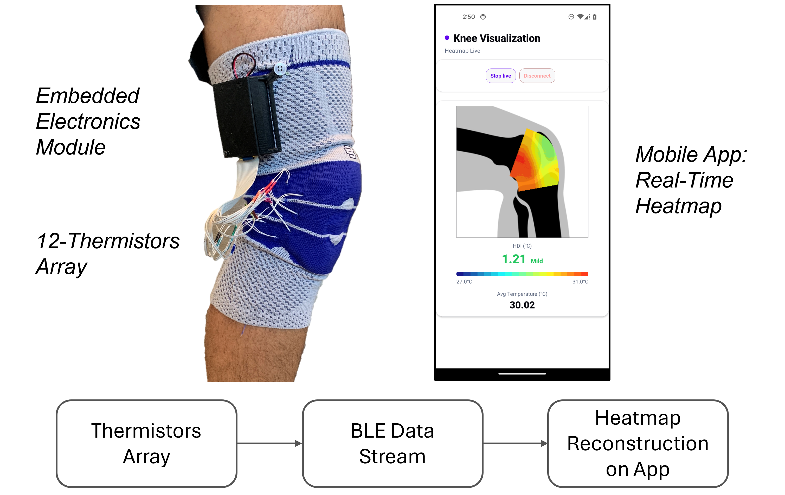

Sensorized Sleeves for Adaptive Knee OA Rehabilitation
Knee osteoarthritis (OA) is among the leading causes of disability worldwide. It is characterized by joint pain, stiffness, and inflammation, which progressively limit mobility and reduce quality of life. While there is currently no cure, physical activity and exercise are the cornerstone of conservative management, helping slow disease progression and maintain function.
However, the relationship between exercise and symptoms is delicate: insufficient activity limits benefits, whereas over-exercise can worsen pain, swelling, and inflammation. Today, the “optimal” dose of physical activity is usually found through trial and error, guided by patient-reported symptoms and clinical judgment.
My work explores sensorized knee sleeves that monitor knee biomechanics and physiology during exercise. By capturing changes in flexion–extension kinematics, thermal patterns related to inflammation, and bioimpedance signatures of tissue composition, these systems aim to enable data-driven, adaptive rehabilitation programs that proactively adjust exercise dosage before symptoms flare.
Polymer Optical Fiber Sleeve for Knee Flexion–Extension Estimation
In this project, a soft sleeve integrates five Polymer Optical Fiber (POF) sensors aligned with the Langer’s lines of the skin around the knee. This layout maximizes conformity to the anatomy and sensitivity to joint motion.
During treadmill walking, data were collected simultaneously from the POF sleeve and a motion capture system. A BiLSTM (Bidirectional Long Short-Term Memory) network was trained to estimate sagittal-plane knee flexion–extension angles using the five POF voltage signals, with motion capture serving as the reference.
Beyond overall accuracy, we systematically analyzed:
- How performance changes with different numbers and subsets of POF sensors,
- The distribution of estimation error across the gait cycle and across participants.
This work was published in IEEE Transactions on Neural Systems and Rehabilitation Engineering (TNSRE) and received the 2024 Best Paper Award.
Demo Video
Thermal Sensor Sleeve for Monitoring Inflammation-Related Knee Temperature Distribution Patterns
The second sleeve focuses on skin temperature distribution over the lateral knee as a proxy for inflammation. A wearable prototype integrating an array of thermistors has been designed to monitor the knee surface temperature pattern during and after exercise.
Thermal camera recordings are used as a reference to estimate the Heat Distribution Index (HDI), which summarizes spatial temperature distribution over the joint. The wearable array is designed to reproduce HDI estimates in real time, enabling continuous monitoring of how exercise bouts modulate local inflammation.
Through a combination of experiments and simulations, we studied:
- The impact of sensor count on HDI estimation accuracy,
- The effect of sensor placement and misplacement on error, and
- How well the sleeve tracks pre/post-exercise changes and recovery trends.
This work was published in IEEE Access.
Thermal Sensor Sleeve Overview
Wearable thermal sensor sleeve with 12-thermistor array and real-time HDI reconstruction on the mobile app.
Bioimpedance and IMU Sleeve for Multimodal Knee Monitoring
The third sleeve combines single and multi-frequency bioimpedance (BioZ) and inertial measurement units (IMUs) to jointly characterize knee joint impedance and movement. Bioimpedance provides information about tissue composition and fluid shifts around the joint, while IMUs capture segment kinematics during walking and exercise.
By integrating these modalities in a single wearable platform, the system aims to:
- Relate changes in BioZ to acute responses to activity and potential swelling,
- Track flexion–extension angles and spatiotemporal gait parameters via IMUs, and
- Lay the groundwork for personalized, closed-loop adjustment of exercise intensity based on both biomechanics and physiology.
This work was presented as a poster at
IEEE Body Sensor Networks (BSN) 2025, Los Angeles (Nov 3–5), titled
"Wearable Bioimpedance Sleeve with Integrated IMUs for Adaptive Knee
Osteoarthritis Rehabilitation".
Authors: Benito Lorenzo Pugliese, Federico De Carlo, Andrea Orlando, Mattia
Ghibaudo,
Marco Caruso, Michelle Bruneau, Danilo Demarchi, Alessandra Angelucci,
Andrea Aliverti, Adam Tenforde, Paolo Bonato.